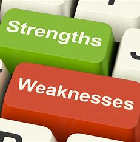
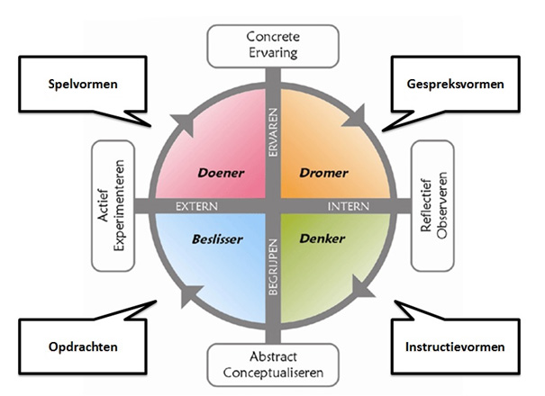
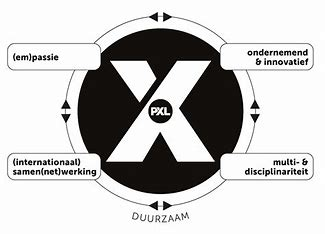

Beschrijving
Sterke en zwakte punten
Professionele sterke punten:
Analytische vaardigheden: Ik ben sterke analytische vaardigheden, waardoor ik complexe gegevens effectief kan begrijpen en oplossingen voor problemen kan vinden.
Leiderschapskwaliteiten: mijn vermogen om het team te leiden en te motiveren helpt me mijn doelen in projecten te bereiken.
Organisatie: ik structureer mijn werk op zo'n manier dat ik tijd en taken effectief beheer, wat me helpt productief te zijn.
Professionele zwakte punten:
Onervarenheid in bepaalde technologie: ik heb beperkte ervaring met bepaalde tools, maar ik leer en ontwikkeld me actief op dit gebid.
Ik besteed niet altijd genoeg tijd aan planing: soms kan mijn wens om meteen aan de slag te gaan het niveau van voorbereiding en planning van het project verminderen.
Streven naar perfectie: soms besteed ik te veel tijd aan het streven naar een ideaal resultaat, wat de deadlines vaar het voltooien van taken kan beïnvloeden.
Persoonlijke sterke punten:
Empathie en gezondheid:mijn empathisch vermogen helpt me effectief te communiceren met collega's en een gemeenschappelijke basis te vinden in een team.
Doorzettingsvermogen en vastberadenheid: ik ben volhardend en bereid moeilijkheden te overwinnen om mijn doelen te bereiken.
Flexibiliteit en aanpassingsvermogen: ik pas me gemakkelijk aan nieuwe omstandigheden aan en reageer snel op veranderingen.
Persoonlijke zwakte punten:
Perfectionisme: soms kan mijn streven naar perfectie het proces van het nemen van beslissingen of het voltooien van een taak vertragen.
Moeilijkheden bij het organiseren van persoonlijke tijd: soms is het moeilijk voor mij om mijn persoonlijke tijd effectief te verdelen tussen werk en privéleven.
Neiging tot stress in bepaalde situaties: in stressvolle situaties probeer ik kalm te blijven, maar soms kan dit mijn werkefficiëntie beïnvloeden.
Reflectie over persoonlijke ontwikkeling
Wat heb ik bijgeleerd tijdens de POP-sessie?
We hebben het cyclische Kolb-model bestudeerd, dat helpt te begrijpen hoe we nieuwe kennis assimileren door ervaring. Het is gebaseerd op een cyclisch proces dat in vier fasen is verdeeld. In mijn eigen woorden is dit de toepassing, reflectie, abstractie, en toepassing van verworven kennis in nieuwe situaties. Het stelt om beter te begrijpen hoe we nieuwe kennis leren door ervaring en hoe deze ervaring ons handelen en denken in de toekomst vormgeeft. Dankzij deze methode leerde ik beter te begrijpen en nieuwe kennis sneller te assimileren.
Hoe kan ik die leerstof implementeren in je dagelijks leven als programmeur?
Het gebruik van het Kolb-model in het dagelijks leven draagt bij aan beter begrip van de eigen ervaring, de ontwikkeling van kritisch denken en het vermogen om zich aan te passen aan nieuwe situatie. Dit helpt persoonlijke en professionele groei, evenals het verbeteren van de interactie met de buitenwereld. Ik leerde mijn acties te analyseren en na te denken over hoe ik het anders of beter had kunnen doen, niet bang te zijn voor nieuwe ervaringen en situaties, nieuwe kennis in de praktijk toe te passen en te analyseren, kritisch te denken, nieuwe methoden, ideeën of processen uit te proberen om de effectiviteit van mijn werk te verbeteren, de tijd nemen om mijn interacties met andere mensen te analyseren om de effectiviteit van de interactie te vergroten.
Reflectie X-factor
Wat is de X-factor?
De X-factor is een uitvinding van PXL die je helpt jezelf te zien en de juiste richting te kiezen voor je ontwikkeling. Het heeft vier richtingen die elk student moet volgen om een uitstekende professional te worden. Met behulp van de X-factor kun je bepalen op welk niveau je op moment bevindt en je het pad en het uiteindelijke doel laten zien. Het wordt ook automatisch toegewezen aan het PXL-trainingsprogramma.
Wat is jouw passie? Hoe houdt dit verband met de opleiding die je bent aangevat?
Ik hou van programmeren. Ik wil mijn toekomst verbinden met dit beroep en een professional worden op dit gebied. Dit is mijn doel, dit is mijn droom en het wordt steeds realistischer.
Wat geeft je energie en goesting? En hoe zie je dit in je opleiding die je bent aangevat?
Allereerst is dit mijn oude droom, want ooit begon ik een programmeertaal te leren, maar het lot besloot anders. En nu heb ik de kans weer, en deze keer zal ik de fout van mijn jeugd niet herhalen. Ik schrijf graag programmacode en het is een special gevoel als het resultaat van je werk ziet, als de tandwiel beginnen te draaien en het is moeilijk te geloven dat ik het heb gedaan.
Hoe zie je jezelf in dialoog gaan met anderen in de opleiding die je bent aangevat?
Hier moet je in een team kunnen werken ook al werken we samen aan hetzelfde project maar elke ontwikkelaar doet alleen zijn deel. Het is belangrijk om je deel van het project goed te begrijpen. Over het algemeen zijn programmeurs grote enthousiasten en de meeste gesprekken met hen gaan over code.
Wat versta jij onder een ken-doe mentaliteit (ondernemend zijn in de brede zin van het woord) en hoe zie je dat in de opleiding die je bent aangevat?
In feite is dit de definitie van wijsheid van Pluto - "Kennis is geen wijsheid, wijsheid is de toepassing van kennis". In ons geval is dit een oproep tot concrete acties om de opgedane kennis om te zetten in een concreet resultaat. Een verantwoorde benadering van de realisatie van hun kennis vaardigheden op basis van een creative impuls.
Hoe ver sta jij op dit moment al in een ken-doe mentaliteit?
"Er is geen grens aan perfectie" is een andere wijze uitdrukking. Het is moeilijk om deze vraag te beantwoorden als je niet weet waar de grenzen liggen.
Hoe ziet jouw netwerk er op dit moment uit? Kan je dit netwerk inzetten in functie van de opleiding die je hebt aangevat?
Natuurlijk communiceer ik in dit stadium vooral op het programmeurs forum, bekijk ik verschillende educative video's op YouTube en PluralSight, gebruik ik verschillende educative programma's maar ook telegram-kanalen en andere platforms. Ik volg ook het nieuws in de wereld van IT in verschillende talen. Maar de belangrijkste communicatie vindt plaats met de lectoren en studenten van PXL.
Hoe zou jij internationaal samen kunnen werken in de opleiding die je hebt aangevat?
Ik denk dat dit mijn belangrijkste werkterrein zou kunnen worden omdat het delen van ervaringen met andere programmeurs helpt me mijn kennis enorm uit te breiden. Ik denk dat deze ervaring in de toekomst nuttig zal zijn bij het oplossen van meer competente taken.
Wat weet je op dit moment al over de inhouden van je opleiding?
Na het afronden van de training stel ik me voor als een universele developer van software applicaties en websites. Dit is de eerste fase van ontwikkeling op het gebied van IT, de uitgangspositie - zodat je je weg kunt beginnen in deze sector.
Met welke andere disciplines (opleidingen / beroepen / ...) zou jij in aanraking kunnen komen in je opleiding?
Met een groot aantal disciplines. Het hangt af van de taken die moeten worden opgelost. Hier kunt u zich niet alleen in uw profiel ontwikkelen, maar ook in andere richtingen.